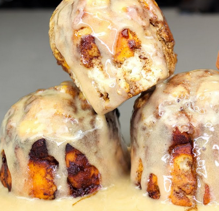

Cinnamon Rolls

Description
This cinnamon is 355 calorie treat while containing 35g of protien per serving at the same time!
The prep time for the cinnamon rolls are roughly 20 minutes and takes a
total of 45 minutes to complete and serve and makes single serving
Pioneered by Greg Doucette
Ingredients
Dough
- 30g (¼ cup) self-rising flour
- 15g (-½ scoop) cinnamon or vanilla
protein powder
- 60g (-¼ cup) 0% fat Greek yogurt
Filling
- 30ml (2 tbsp) low calorie syrup
- 2.Sg (½ tsp) cinnamon
- 2.Sg (½ tsp) sweetener
Glaze
- 16g (-½scoop) vanilla protein
powder
- 45ml (3 tbsp) sugar-free syrup (to
taste)
Macro-Nutrients
- calories: 335
- Fat: 2g
- Carbs: 46g
- Fiber: 1g
- Protien: 35g
Cooking Directions
- Preheat the oven to 350 °F (177 ° C)
- Add all dough ingredients to a large bowl. Whisk until dough
begins to form dough (it will be sticky). With your hands, roll the
dough into a ball and let sit.
- Place the dough on a floured surface and spread out into a long
rectangle using wet fingers.
- Spread the filling over the dough, then roll into a log. (May need a
butter knife to help roll if sticking to the surface)
- Place roll onto a sprayed mug and drizzle any leftover filling over
it.
- Bake for approximately 15-20 minutes, checking for doneness
after 15 minutes.
- Remove from the oven when done baking. Let sit for 2-3 minutes
before eating.
Return to top of page
Return to main page